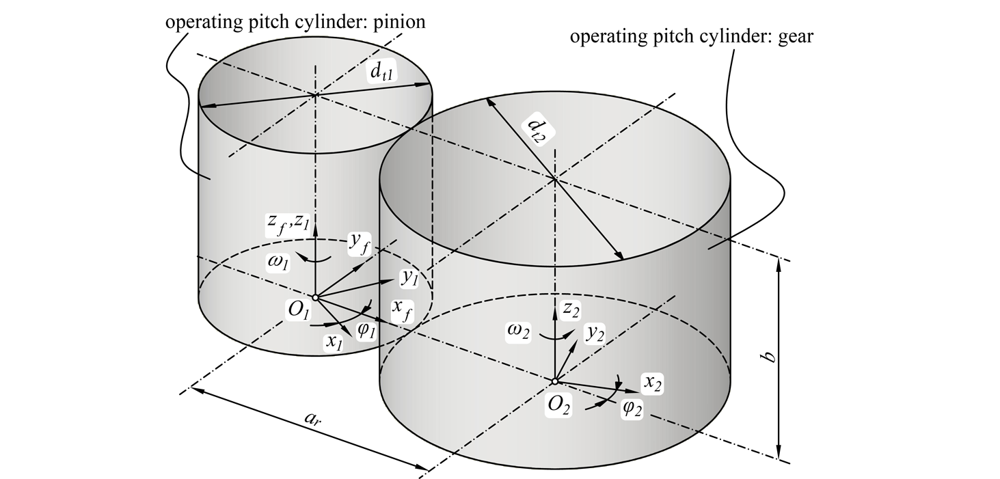
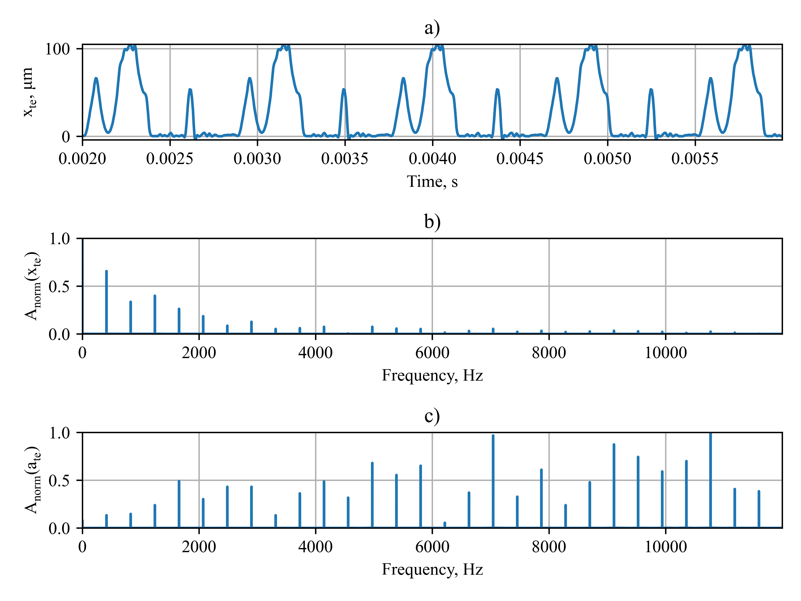
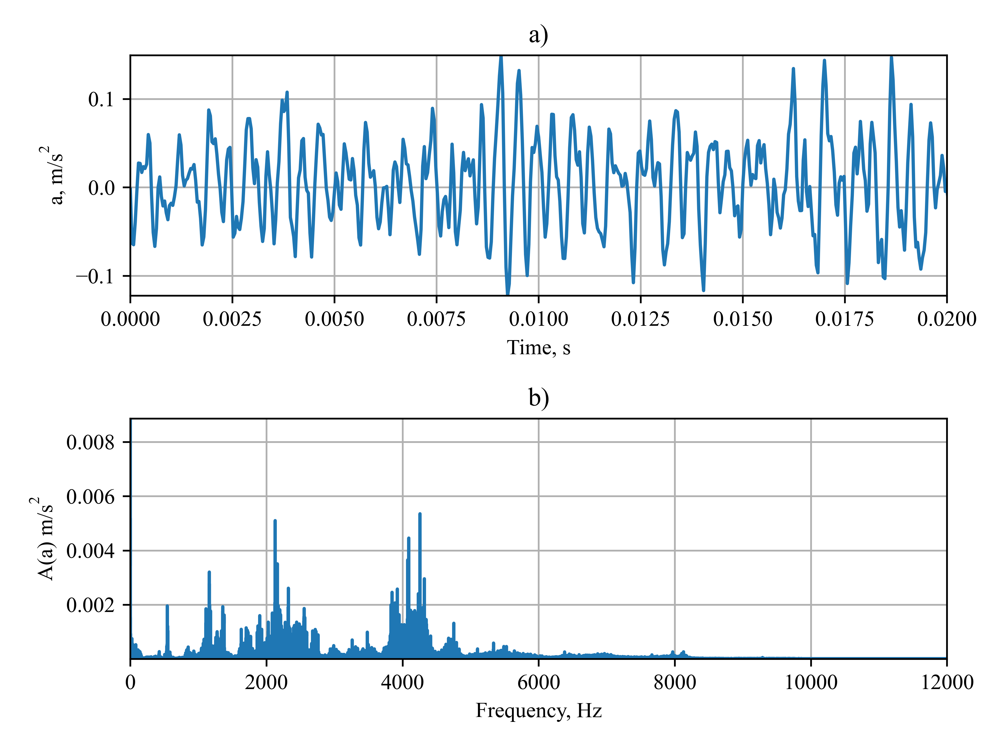
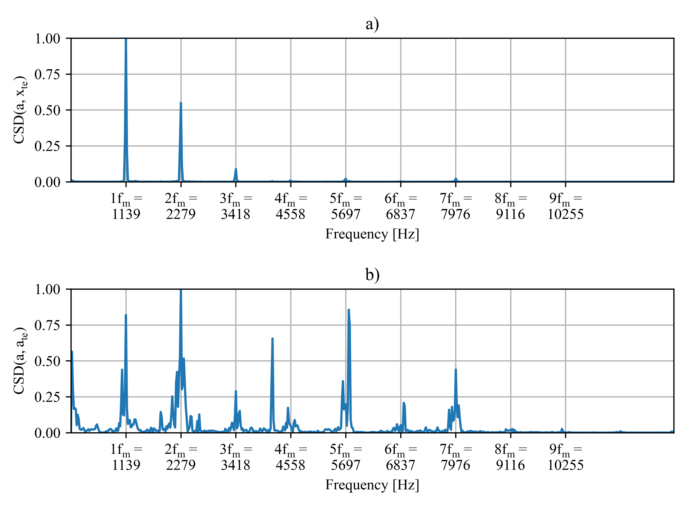

Vibration excitation in gearboxes due to surface deviations
Used tools and packages
Python NumPy Scipy Matlab Differential geometry Optimization ToolboxIntroduction
This work is part of a larger international project related to the influence of gear accuracy on vibration and noise excitation. My job was to determine what is the influence of gear surface deviations on transmission error and the resulting vibration of the gearbox. For that purpose, I developed a mathematical model that enables to comparison transmission error spectrum with the spectrum of the actual gear case acceleration signal and evaluate its components and the influence on the gearbox's operation.
Methods
The cylindrical helical gear pair was under consideration with the coordinate systems presented below:
It was assumed that teeth surfaces are described by vectors:
and its units normal:
Tooth surface deviations resulting as an error in topography may be represented over the grid of coordinates , as ΔSi (Fig. below) where i=1,2 refers to pinion and gear respectively.
This surface may be obtained from real gear measurement ex. by interpolation over the measured tooth profiles. Tooth surface with surface deviation is defined as:
In analyses instead of the ideal surface described the surfaces with topography errors should be taken into account. Measured and interpolated surfaces of real gears are presented in Fig. below.
Then in the fixed coordinate system we obtain:
The method for calculating the transmission error assumes a perfect mesh between pinion tooth Σ1 surface and gear tooth Σ2 surface, i.e. one in which the gears are rotated by angles resulting from the theoretical gear ratio Surfaces in the nth position are shown below:
In each position n resulting from the discretization of gear rotation angles, between the surfaces, there is a certain distance measured along the arc with a radius corresponding to the length of arc where M1 is a point on surface Σ1 with coordinates , and M2 a point on surface Σ2 with coordinates . Angle φkor by which surface Σ1 would have to be rotated for points M1 and M2 to overlap is the central angle corresponding to the length of the arc and can be determined based on coordinates as:
The distance between flank surfaces is expressed as:
In each nth position, there is a certain minimum distance with its corresponding angle The relationship between minimum angle and gear rotation angle φ2 determined discretely for all n positions constitutes the transmission error. The greatest challenge of the method is to specify the location of point M2 on surface Σ2 that corresponds to the coordinate and radius . The issue may be easily solved by interpolation in a cylindrical coordinate system
Transmission error excitation
The interpolated values of deviations were used to obtain the transmission error according to the method described in previous section. The resulting transmission error (Fig. a) and its normalized amplitude spectrums (Fig. b, c) are presented below:
The amplitude spectrum was obtained with the aid of a fast Fourier transform (FFT) of the time signal of transmission error xte, and its acceleration :
where FFT(x) is the fast Fourier transform of signal x, x is a time signal (xte or ate), Re denotes the real while Im the imaginary part of a complex number and N is the number of signal samples. Next, the amplitude spectrum was normalized according to the equation:
The maximum value of transmission error was about 100μm (Fig. a). It should be noted that this transmission error results only from topography errors (profile and helix deviations). Other factors influencing its value such as pitch errors, deflections etc. were not included. Increased amplitudes of transmission error are observed below frequency of 2000Hz (Fig. b), while in case of acceleration they are present at higher order of harmonics (Fig. c).
Correlation with measurement data
The vibrations were measured by piezoelectric sensor mounted on gear case, in a vertical direction (perpendicular to the shafts plane). Measurements were taken several times through the whole operating time of 10h (which correspond to 1.5∙106 number of cycles of pinion) with sampling frequency 25kHz. This results in acquired acceleration time signal with 225000 samples a part of is presented on Fig. a below. While gearbox operation (2280rpm, 455Nm - on pinion) no sign of failure was detected. Amplitude spectrum of gear case acceleration signal (Fig. b) was calculated as in previous section.
In order to compare the results of tooth contact analysis with actual vibrations as a measure of similarity the cross power spectral density was chosen:
where W denotes the power spectral density estimate according to Welch’s approach with Hann window function, x and y are a normalized time signals and x*y is a cross-correlation of time signals x and y. Results of calculations were shown on Fig. below:
Summary
High peaks can be observed within a cross-spectral density which means that the transmission error signal and its acceleration are periodically correlated with the gear case acceleration signal. The greatest power of transmission error is shared with gear case acceleration within the first three orders of harmonics - fm, 2fm, 3fm. The strongest correlation in the case of transmission error acceleration is observed within 2fm frequency. High peaks occurred also at fm, and 5fm. Based on the obtained results the following conclusions can be drawn:
- surface deviations have a significant influence on gearbox vibrations,
- in order to minimize the vibration excitation the transmission error resulting from surface deviations should be minimized,
- particular care must be taken on transmission error acceleration if higher-order harmonics are under consideration.